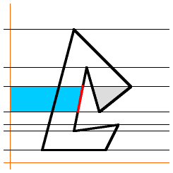

|
Algorithm to find the area of a polygon
If you know the coordinates of the
vertices of a polygon, this
algorithm
can be used to find the area.
Parameters
| X, Y |
Arrays of the x and y coordinates of the vertices,
traced in a clockwise direction, starting at any vertex.
If you trace them counterclockwise, the result will be correct but have a negative sign. |
| numPoints |
The number of vertices |
| Returns |
the area of the polygon |
The algorithm, in JavaScript:
function polygonArea(X, Y, numPoints)
{
area = 0; // Accumulates area in the loop
j = numPoints-1; // The last vertex is the 'previous' one to the first
for (i=0; i<numPoints; i++)
{ area = area + (X[j]+X[i]) * (Y[j]-Y[i]);
j = i; //j is previous vertex to i
}
return area/2;
}
The algorithm assumes the usual mathematical convention that positive y points upwards.
In computer systems where positive y is downwards (most of them)
the easiest thing to do is list the vertices counter-clockwise using the "positive y down" coordinates.
The two effects then cancel out to produce a positive area.
Example
The following JavaScript code will find the area of the figure on the right.
It will output "Area=128" which by inspection matches the figure.
var xPts = [4, 4, 8, 8, -4,-4];
var yPts = [6, -4, -4, -8, -8, 6];
var a = polygonArea(xPts, yPts, 6);
alert("Area = " + a);
How it works
|
Consider one side of the polygon.
The formula is based on taking the area to the left of the chosen side, all the way to the Y-axis.
That area is shaded grey in this illustration.
|
|
That area is equal to the area of the grey rectangle in this picture. (You can make the area a rectangle by removing a triangular piece from the bottom right and putting it at the top left.) So, the grey area is easily calculated as (X0 + X1) / 2 (the rectangle's width) times (Y0 - Y1) (the rectangle's height).
This area is what we are adding to the accumulation variable area each time through the loop - but the /2 is moved to the end of the function for purposes of efficiency.
|
|
Going down one side of the polygon adds all the grey area shown here.
|
|
Then going up the other side of the polygon subtracts all the yellow area shown here, because when a side is going up, Y0-Y1 is a negative number.
The area that wasn't subtracted (grey) is the area of the polygon.
You don't have to start at the top of the polygon. You can start anywhere, go all the way around,
and the numbers will still add up to the same value.
Also, it doesn't matter whether some or all of the polygon's corners are in the negative-X space, negative-Y space, or both,
the result is still the same.
|
A more complex case
|
What if the polygon is something unusual like this?
|
|
Draw a horizontal line through every corner of the polygon.
This divides the polygon into horizontal strips which are partitioned by straight pieces of the polygon's sides.
|
|
Now look at just one strip. The right-most segment (red) adds the grey area to the total...
|
|
...then the next segment removes the yellow area...
|
|  |
...then the next segment adds the blue area...
|
|
...then the next segment removes the yellow area.
|
|
Only the grey area (in this illustration) remains in the total, and it's clearly the polygon's area within this strip. |
Of course, the polygonArea() function is not breaking the polygon into strips like this.
But since the area to the left of any one side must be equal to the sum of that side's strip-by-strip pieces,
the grand total must be the same, and must be equal to the area of the whole polygon.
Limitations
There are circumstances where the algorithm will produce the wrong or unexpected results. They all have to do with self-crossing
polygons where one side crosses over another side of the same polygon. It is not surprising that this happens - almost all the theorems about polygons also fail with self-intersecting polygons.
|
If the polygon crosses over itself (i.e. is not "simple") the algorithm will fail.
The parts of the polygon that are traced clockwise count as positive area, and the parts that are traced counterclockwise count as negative area. So for example, with the polygon on the left, the algorithm will return zero,
which is probably not what you would expect.
|
|
A polygon can be self-crossing, yet still traced entirely clockwise. In that case, the area is all positive,
but the overlap area (blue) counts twice.
In this example, the area returned would be: (grey + 2*blue).
A triple-overlap would result in tripling of the overlap area, etc. The result will be too large.
|
|
If the polygon has a 'twist' , such that part of the polygon has positive area and part has negative area, and those two areas
overlap, then the overlap area cancels out and does not count toward the total area at all.
In this example, the function returns (grey - red), which will be too low.
|
Acknowledgments
Thanks to Darel Rex Finley for permission to reproduce this entry. The original can be found on his
web page.
Other Coordinate Geometry entries
(C) 2009 Copyright Math Open Reference. All rights reserved
|
|